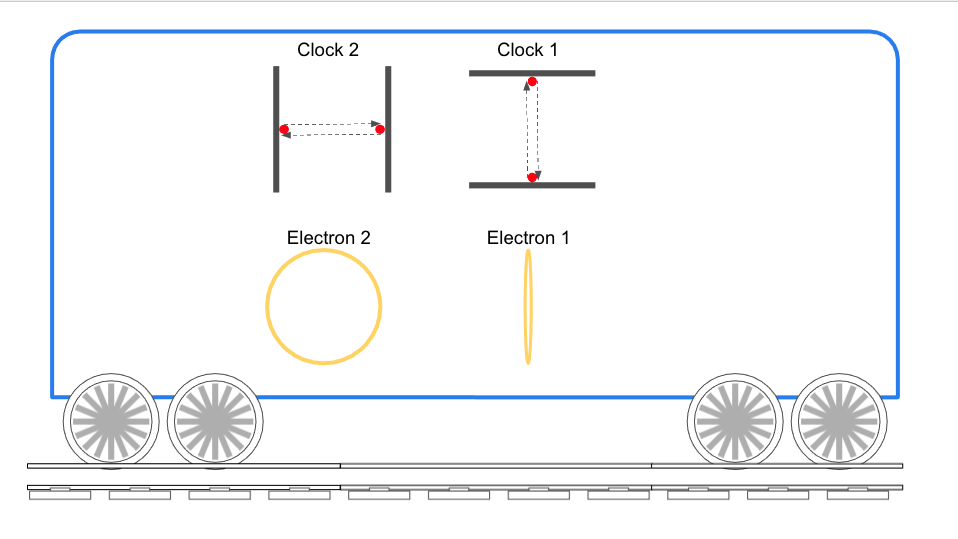
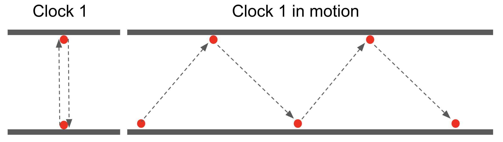

Special Relativity
The theory of special relativity changed the way we looked at space an time.
Before special relativity, we perceive the world as having 3 dimension (we label them x, y, z),
this world changes as time passes (yet another parameter we label t).
Einstein suggested a different view. He claimed:
I know how to treat light (the electromagnetic waves introduced by Maxwell) in a way
that allows all observers to see light moving at the same velocity,
even if each observer has its own relative speed.
The way to do it is to use Lorentz transformation in order to translate one observer to the other.
Once we accept that, the results of the Michelson Morely experiment can be understood, that is,
you can move however you like, you will still measure the same velocity with every beam of light around you.
Or put it more simply, you cannot race or outrun a beam of light.
However, by doing that, the different observers will not be able to agree on the normal laws of mechanics.
So, the solution is to change tne Newtonian mechanics, than handles material objects,
so that it becomes consistent with the way light behave.
This led to a deep revision of what we though about things that we felt so fundamental and logical,
like space, time, energy, and mass.
A new way to look at Special Relativity
My view is simple. Yes, matter naturally behaves like light, because matter is made of light!.
So that's the real origin of special relativity.
In some way, we've just proven special relativity, but i can't resist the joy of diving into all the details
of how this is manifested in the full theory, so here comes the detailed explanation.
Time Dilation
The most astonishing revelation that comes from the theory of special relativity is time dilation - time passes
more slowly if an we are moving. There are several apparent contradictions that arise from time dilation, but
Einstein was able to solve them all in a consistent manner. The price that Einstein suggest that we pay is
to declare time itself as relative and abandon the notion of an absolute common time for all observers.
The new theory claims that time itself is absolute and common, but "time measurement devices" change their behavior
where moving against the local ether environment. This is not strange phenomenon. A pendulum acting as a time
measurement device, is affected by the acceleration of the containing system (acceleration due to gravitation or
movement). This does not make us declare time as relative as other phenomena, and indeed, other devices are not
affected by acceleration. However, when particles move, even at constant speed, through the ether, a change in
behavior happens at the particle level, so all our clocks slow down. Let's see how this happens.
Boarding the Einstein train

Fig #et1# - Clocks on a train
In a world where ether is at rest, we board a train that will move at a high speed through ether. On the train
there are two light clocks. A light clock is made of two mirrors, with a beam of light going back and forth between
them. We will use two clocks of this type, and position them one with the light beams moving perpendicular to the
direction of the motion (Clock 1), and the other with the light beams moving in parallel to the train motion (Clock 2).
We will also be looking at two electrons each one is made of a light beam moving along a circular path. One electron
will have the rotation axis parallel to the train motion (Electron 1), the other will have its axis perpendicular to
the train motion (Electron 2).
So now let's put the train in motion and git it a considerable speed, like around 70% of the speed of light. At this
state, we can see that the perpendicular light clock (Clock 1) behave differently than the clock at rest. In motion,
the direction of the light beams is diagonal, and because the total speed of the beams remains the speed of light
(relative to the ether), then the time it takes to complete an up down cycle is longer.

Fig #etc1# - Clock 1 in motion
If we really use this device as a clock, i.e., a time measuring device the it will show a slower passage of time.
This is obvious from the fact that light "invests" part of its speed to advance with the train, so it has less speed
for travelling between the mirrors. The time of each cycle tick is therefore longer.
The Michelson Morely experiment is really about Length contraction
bla bla
The connection of speed to energy
bla bla
What is mass?
bla bla
Mass is Energy close topic
Learn why \(E = MC^2 \)
Mass and Energy are intuitively perceived as opposites.
In my naive mind, I imagined mass particles as tiny spheres made of
some tough material (like marble...), while energy seemed more like a wobbling
wave moving around. So once I hear that energy can me absorbed by particles and add
to their mass, what I imagine is a wobbling thing approaches a piece
of marble, disappear inside it, just to make more marble?! How can this happen. And the top
of all absurdities, is two pieces of marble, one electron, one positron, approach each other
and disappear into a thin wobbling something.
The interpretation of modern physics to this situation is less naive, but also unsatisfactory.
The combined world of all electrons (and positrons) in the world, resides on a sheet called
the "Electronic Spinor Field". Forget the sphere of marble, that sheet resembles a "Spring mattress".
The springs are made of "Iron", but in themselves, they are not electrons. Electrons are vibrations
on that mattress (say what!?!). If we are talking about a beam of many electrons, like in a particle
accelerator, we can imagine a continuous wave crossing that mattress from side to side. But as for
a single electron, the view is of a located stable wobbling at some place on the mattress. What
could keep this disturbance from dispersing into its surroundings? Well, not the whole story. There
is another mattress, called the "Photonic Vector Field", working together with the first mattress.
This new mattress also has its own internal pulling and pushing springs, though with different rules.
However, there are also other springs that connect between the two mattresses. So now a single electron,
which is a localized wobbling something on the Electronic mattress, must also create vibration in
the Photonic mattress.
\[E = MC^2 \]
\[ \frac{\partial}{\partial t} \rightarrow \frac{D}{Dt} \equiv \frac{\partial}{\partial t}
+ U_x\frac{\partial}{\partial x} + U_y\frac{\partial}{\partial y} + U_z\frac{\partial}{\partial z} \]
\[ \frac{DE}{Dt} =\nabla \times B \;\;\;\;\;\; \frac{DB}{Dt} = -\nabla \times E \]
\[E_t^2 = P_M^2 + E_0^2 \]
\[ d\tau = dt\sqrt{1-\frac{v^2}{c^2}} \]